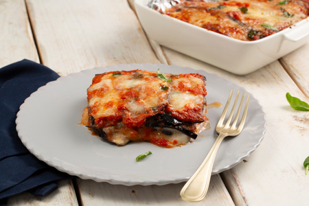

Le polpette di ricotta col sugo pare siano tipiche della cucina calabrese, terra ricca di terreni destinati alla pastorizia, dove tutt’ora è molto facile trovare dell’ottima ricotta fresca locale sia di mucca che di pecora. Questo secondo piatto, che prevede l'uso della ricotta in sostituzione della carne, deriva infatti dalla tradizionale cucina contadina, fatta di ingredienti molto semplici ma di grande sapore e genuinità.
Parmigiana di melanzane

La parmigiana alla calabrese è una ricetta ricca e saporita, caratterizzata da melanzane fritte (spesso impanate), provola silana, uova sode e un tocco piccante di 'nduja o soppressata.
Timballo nduja e cacio silano
Il timballo di pasta con 'nduja e cacio silano è un piatto ricco e saporito, tipico della cucina calabrese, che combina la piccantezza della 'nduja con il gusto intenso del cacio silano, creando un'esplosione di sapori che porterà sulla vostra tavola tutta la piccantezza e il gusto intenso della cucina calabrese.